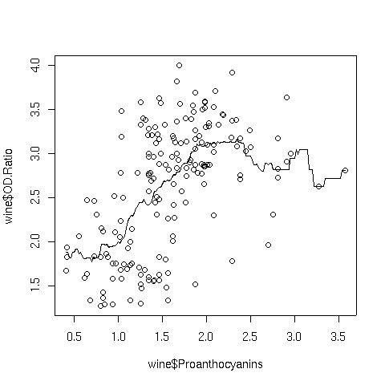
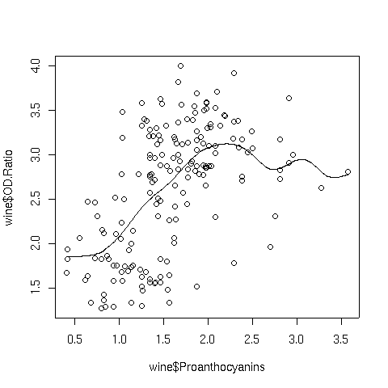
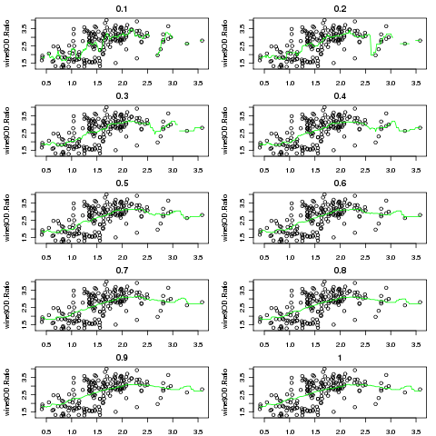
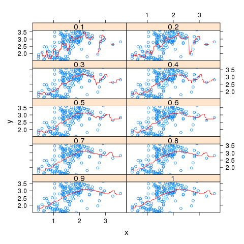
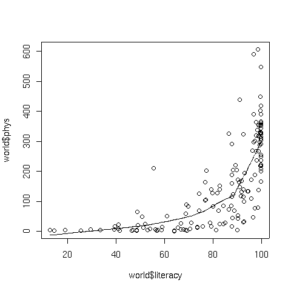
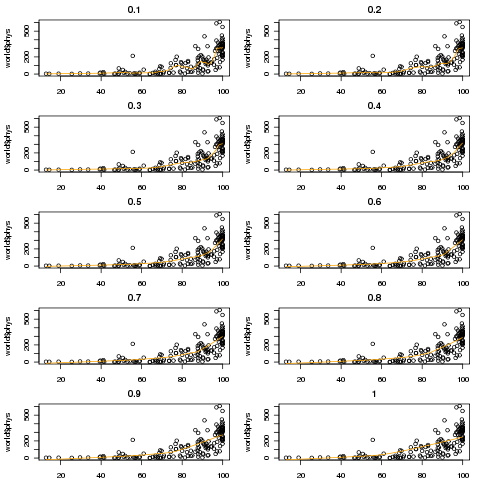

Smoothers
1 Smoothers
In many of the graphs we've looked at, we added a straight line representing the
best linear regression line that went through the data we were plotting. Such lines can
be very helpful when there are lots of points, or when outliers might detract from our
seeing a relationship among the points.
But plotting the best linear regression line has some limitations. For one thing,
the regression has to fit all the data, so finding a good regression fit is often a
compromise between being true to the data in any given range, and trying to come up with
a single line that does reasonably well throughout the entire range. For some data, this
may be appropriate. For example, if we know that two variables really follow a linear
relationship, then we'd have to assume that deviations from that relationship are just
noise, and the best straight line would be a meaningful way to display their relationship
on a graph. However, situations like that are not that common.
To come up with a way of visualizing relationships between two variables without
resorting to a regression lines, statisticians and mathematicians have developed
techniques for smoothing curves. Essentially this means drawing lines through the points
based only on other points from the surrounding neighborhood, not from the entire set of
points.
There are many different types of smoothers available, and most of them offer an
option that controls how much smoothing they will do as well as options to control the
basic methods that they use, so it's usually possible to find
a smoother that will work well for a particular set of data.
2 Kernel Smoothers
Kernel smoothers work by forming a weighted average of all the y-values corresponding
to points whose x-values are close to the x-value of a point being plotted. The
function that defines the weights is known as a kernel, and the number of points involved
in the weighted average is based on a parameter known as the bandwidth. The default
kernel is a box function; in other words, it simply averages together y-values which are
within the specified bandwidth of a given x-value, and uses that average as the y-value
for the x-value in question. With a very tiny bandwidth, this corresponds to a
"connect-the-dots" type of drawing. With a very large bandwidth, it will basically
estimate every y-value as the mean of all the y-values. However, even when the bandwidth
is carefully chosen, using the box kernel rarely will result in a truly smooth graph.
For example, consider a plot of OD.Ratio versus Proanthocyanins from
the wine data set that we've used in previous examples. The following code
produces a plot of the variables, and superimposes a line representing a box kernel
smooth with the default bandwidth:
> plot(wine$Proanthocyanins,wine$OD.Ratio)
> lines(ksmooth(wine$Proanthocyanins,wine$OD.Ratio))
Here's the graph:

Notice how choppy the line is, especially where there isn't much data. That's because
the box kernel is too extreme - it either adds in a point or not. So using the box
kernel is like stacking up a bunch of square boxes around each point, and we don't really
get a smooth result.
More commonly, kernels will have a maximum at distances that are very small, and will
decrease gradually as the (absolute value) of the distance from the center of the
kernel increases. This means that nearby points will have lots of influence on the
weighted estimate that will be plotted, but as we move away from a particular point,
the neighboring points will have less and less influence. We can modify how many
points are considered through the bandwidth - including more points tends to give
smoother curves that don't respond as well to local variation, while decreasing the
bandwidth tends to make the curve look "choppier". One of the most common kernels
used in smoothing is the Gaussian or normal kernel. This kernel is the familiar
"bell curve" - largest in the middle (corresponding in this cases to distances of
zero from a particular point), and gradually decreasing over it's supported range.
The width of that range is determined by the bandwith when using a kernel smoother.
Here's the Proanthocyanins vs. OD.Ratio plot, smoothed with a
normal kernel using the default bandwidth:

Notice the change in the line when switching to the normal kernel; the line
is now smooth, and we can see that a linear relationship that holds up until around
a Proanthocyanin concentration of about 2.
The argument that controls the size of the neighborhood that's used
by ksmooth
to estimate
the smoothed value at each point is called bandwidth. We can examine
the effect of changing the bandwidth as follows;
kplotfn = function(bw){
plot(wine$Proanthocyanins,wine$OD.Ratio,main=bw)
lines(ksmooth(wine$Proanthocyanins,wine$OD.Ratio,bandwidth=bw),col='green')
}
bws = seq(.1,1,by=.1)
par(mfrow=c(5,2),mar=c(2,4,2,1)+.1)
sapply(bws,kplotfn)

After adjusting the margins, the plot we got looks something like a lattice plot.
But how could we produce an actual lattice plot with this data? We would need
a data frame with x and y values for each bandwidth. What does ksmooth
return?
> result = ksmooth(wine$Proanthocyanins,wine$OD.Ratio)
> class(result)
[1] "list"
> names(result)
[1] "x" "y"
Since the lengths of x and y must be equal, we
can convert the output to a data frame directly. Let's write a function which
will generate a data frame with x, y and bandwidth
values for a single bandwidth:
kfun = function(bw)
data.frame(bw=bw,as.data.frame(ksmooth(wine$Proanthocyanins,wine$OD.Ratio,bandwidth=bw)))
Notice that R realized it had to repeat the single bw value
to make it compatible with x and y. As always, we should test
the function:
> result = kfun(.5)
> head(result)
bw x y
1 0.5 0.4100000 1.881429
2 0.5 0.4279096 1.881429
3 0.5 0.4458192 1.812500
4 0.5 0.4637288 1.812500
5 0.5 0.4816384 1.879000
6 0.5 0.4995480 1.879000
Now we can create a list of data frames, one for each bandwidth:
> frames = lapply(seq(.1,1,by=.1),kfun)
> allbws = do.call(rbind,frames)
> dim(allbws)
[1] 1780 3
Notice the use of the do.call function, which is used here
to call rbind with the data frames for all of the different bandwidths.
To get both points and lines on each panel, we can create a custom panel function:
mypanel = function(x,y,...){
panel.xyplot(wine$Proanthocyanins,wine$OD.Ratio);
panel.xyplot(x,y,type='l',col='red')
}
xyplot(y~x|factor(bw),data=allbws,type='l',as.table=TRUE,layout=c(2,5),panel=mypanel)
The resulting plot appears below:

3 Locally Weighted Regression Smoothers
Another approach that is often used to smooth curves is locally weighted regression.
Instead of taking a weighted average of y-values near the x-values we want to plot,
the nearby points are used in a (usually quadratic) weighted regression, and predicted
values from these local regressions are used as the y-values that are plotted.
The lowess function in R implements this technique by using the reciprocal
of the residuals of successive fits as the weights, downgrading those points that
don't contribute to a smooth fit. In the lowess function, the argument
f= specifies the fraction of the data to be used in the local regressions.
Specifying a larger value results in a smoother curve.
To illustrate, consider a plot of literacy versus phys, the number
of physicians per 100000 people, from the world data set that we've used in
previous examples. The following code produces a plot of the data with a lowess
smoothed curve superimposed:
> plot(world$literacy,world$phys)
> lines(lowess(world$literacy,world$phys))
The graph appears below:

The argument to lowess that controls the level of smoothing is f,
the fraction of the data which will be used in the local regressions.
Let's compare the results of smoothing the literacy/physician curve using different
values of f
lplotfn = function(f){
plot(world$literacy,world$phys,main=f)
lines(lowess(world$literacy,world$phys,f=f),col='orange')
}
fs = seq(.1,1,by=.1)
par(mfrow=c(5,2),mar=c(2,4,2,1)+.1)
sapply(fs,lplotfn)
For this particular data set, there's not much difference in the
appearance of the smoothed curve, although there is a bit of noise
when using the lowest value of f

File translated from
TEX
by
TTH,
version 3.67.
On 18 Apr 2011, 15:27.